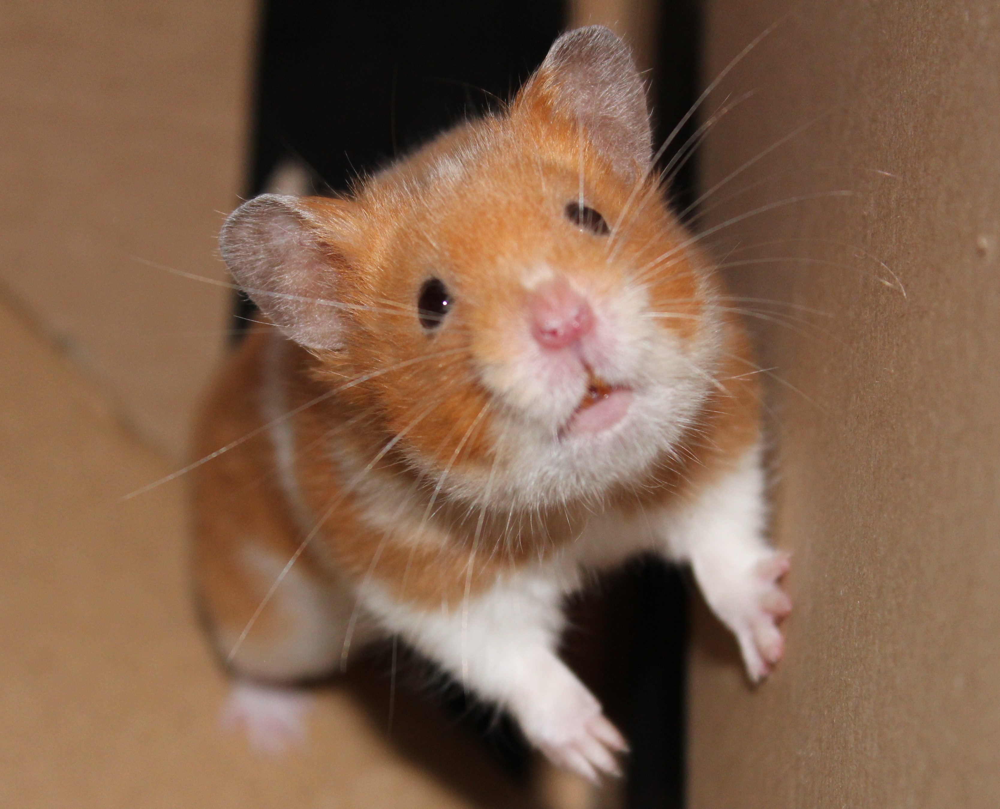

Do recommended cage sizes need to be reviewed...
09-Jul-2017 | Milku
If wild hamsters burrow down to depths of 2 metres?

I've been reading a National Geographic article about hamsters. I knew that Syrian hamsters were first taken into captivity in 1930, but it's been interesting to learn that their existence was first documented, in 1797 by physician Alexander Russell, in a publication called "The Natural History of Aleppo"". It'll be the 220th anniversary of that sometime this year. I must insist on having a celebration...maybe some cake...
I was more surprised by the details of the 1930 capture of my ancestors. Israel Aharoni had to dig down 8 feet (2.4 meters) to find a hamster family. I'm going to have to put an extension to my cage on my wish list. I'm never going to get touch with my wildness if I can only burrow for a few centimetres.
At least my humans have been trying to tantalise my tastbuds. They came home from Blackpool's Wilko shop with some new snacks. The locust bean treats didn't look too appetising, but they tasted good. I also got a new little biscuit that had a surprisingly soft centre. It's supposed to taste like tropical fruit. Whatever it is, it was good.
A bit more worrying is the fact that as my humans were buying these tasty treats, a fellow shopper told them that her hamster loves yogurt. Now, I just know that I'm going to get a bowl full of the stuff one of these days. Just because one hamster likes it doesn't mean we all will.
Anyway, I think the next new taste coming my way is going to be a pea...and maybe a jostaberry... I'll let you know what I think of these offerings from our garden next time.
